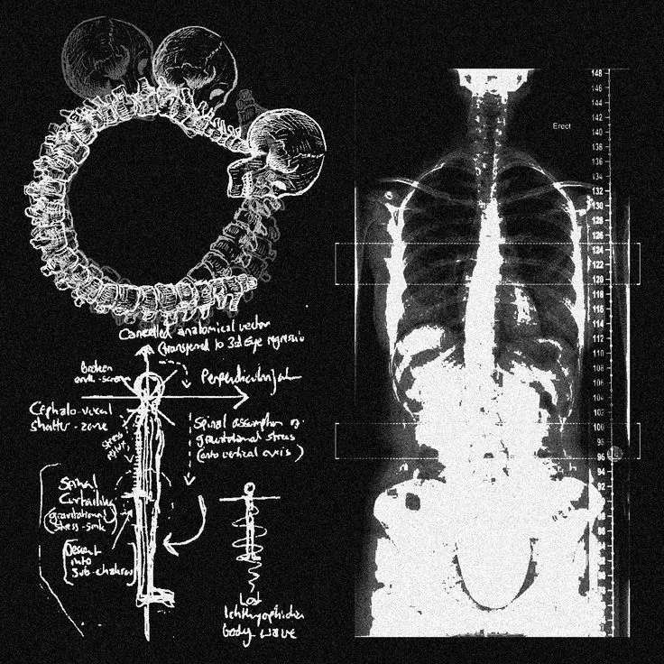
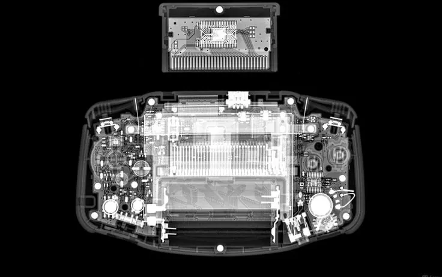
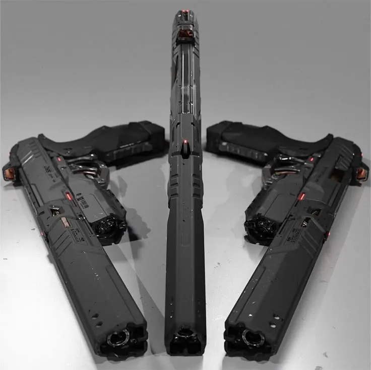
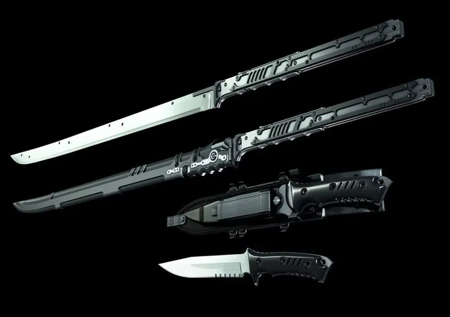

인물
인물 프로필 기록
Personnel_890617
이 페이지는 기존 설정 내용을 최대한 유지하고, 관련 확장 설정으로 이어지도록 재정리한 기록입니다.
첨부 이미지 빠른 보기
첨부 회수 이미지 / 인물 프로필 기록 / HASH 57674a65 첨부 회수 이미지 / 인물 프로필 기록 / HASH 0020ea31 첨부 회수 이미지 / 인물 프로필 기록 / HASH 5cb5ceb0 첨부 회수 이미지 / 인물 프로필 기록 / HASH 91bba440 첨부 회수 이미지 / 인물 프로필 기록 / HASH b8bcf0d5




원본 기록
인물 프로필 기록
Character Profile Archive
본 문서는 Project Curse 세계관 내 주요 인물, 특수 작전 인원, 고위험 개체화 가능 인물, 사건 관련자를 정리한 인물 기록이다
본 기록은 각 인물의 소속, 상태, 능력, 관련 사건, 위험도, 장비 정보를 포함하며, 일부 인물은 기밀 등급에 따라 제한 열람 대상으로 분류된다
N.H.C 기밀 인적 사항 파일
090-TK
◆ 문서 분류: N.H.C 기밀 인적 사항 파일
◆ 파일 번호: 090-TK
◆ 대상자: 타나카 켄
◆ 코드네임: 크로우
◆ 이명: 로덴
◆ 보안 등급: 극비
◆ 위험도: Extreme
◆ 열람 권한: N.H.C 고위 작전부 / U.A.C 지정 인원 / S.I.D 오컬트 부서 / 위버맨시 관리 부서
기본 인적 사항
타나카 켄
◆ 본명: 타나카 켄 / Tanaka Ken
◆ 코드네임: 크로우 / Crow
◆ 이명: 로덴 / Roden
◆ 계급: 대령 / Colonel
◆ 소속: N.H.C
◆ 하운드울프 작전팀 팀장
◆ 신장: 194cm
◆ 체중: 110kg
◆ 혈액형: A형 Rh+
◆ 출생연도: 1971년생
◆ 현재 나이: 55세
◆ 외형 나이: 30세 전후
◆ 종족 분류: 1세대 위버맨시 / The First Generation
타나카 켄, 통칭 로덴은 N.H.C 하운드울프 작전팀을 지휘하는 고위 작전 인원이다
그는 N.H.C 위버맨시 훈련 프로그램을 가장 완벽하게 소화한 1세대 강화 개체로 분류되며, 대-괴이 전투와 고위험 레드존 진입 작전에 최적화된 육체와 전술 능력을 보유하고 있다
현장에서는 크로우라는 코드네임으로 운용되며, 일부 기록에서는 인간 병사라기보다 대-괴이 전용 전술 병기로 분류된다
신체 및 초전술 능력
Combat Profile
로덴은 N.H.C 위버맨시 훈련 프로그램을 통해 강화된 육체와 신경계를 보유하고 있다
대-괴이 전투, 타락체 제압, 그림자 계열 개체 추적, 혈교 의식장 돌파, 레드존 중심부 진입에 특화되어 있으며, 일반 병력으로는 대응 불가능한 상황에서 단독 또는 소규모 팀 단위로 투입된다
초감각 가속
Accelerated Reflexes
로덴의 신경계는 일반 인간의 한계를 초월한 반응 속도를 보인다
날아오는 탄환조차 정지된 것처럼 인지할 수 있으며, 이를 기반으로 초음속에 가까운 고속 이동과 즉각적인 회피 기동을 수행한다
전장에서는 그의 이동이 잔상처럼 보이며, 적이 반응하기 전에 사각으로 진입해 근접 타격을 가하는 방식이 주로 확인된다
강철의 육체와 완력
Colossal Strength
로덴은 맨손으로 장갑판을 찢고, 콘크리트 벽을 부술 수 있을 정도의 완력을 보유하고 있다
위버맨시 특유의 고밀도 골격과 강화 근육 덕분에 일반 총탄이나 날붙이에 직접 피격되어도 치명상을 입지 않는 경우가 많다
일부 기록에서는 근육의 순간 수축만으로 탄환의 관통력을 상쇄하거나, 약한 탄환을 튕겨내는 반응이 확인되었다
특수 시각
Enhanced Optics
로덴은 암흑 속에서도 대낮과 유사한 수준의 시야를 확보할 수 있다
은신 중인 그림자교 단원의 미세한 열기, 잔류 움직임, 비정상 그림자 반응까지 포착할 수 있으며, 특수 고글과 연동될 경우 영적 존재의 위치까지 추적할 수 있다
완전 기억 및 분석
Total Recall
로덴은 전장의 시각, 청각, 움직임, 패턴 정보를 즉각 저장하고 분석한다
적의 전투 방식과 이동 패턴을 단 몇 초 만에 파악하여 대응책을 수립할 수 있으며, 전투가 길어질수록 상대의 행동 예측 정확도가 급격히 상승한다
다만 완전 기억 능력은 이후 기록되는 잔향의 고통과 결합될 경우 심각한 정신 피로를 유발한다
대-초자연 방어 기제
Anti-Occult Defense
로덴의 대-초자연 방어 기제는 우시노다교, 타락교, 혈교, 그림자교 계열의 변칙 공격에 대응하기 위한 특수 시술의 결과이다
이 시술은 일반적인 방어 장비가 아니라, 신경계, 감각기관, 혈액, 정신 방어 체계를 직접 개조하는 방식으로 진행되었다
영적 간섭
Spectral Interaction
로덴은 일반인의 눈에 보이지 않는 영적 존재나 그림자형 개체를 감지할 수 있다
또한 단순 감지에 그치지 않고, 특수 파동을 방출하여 물리적 형태가 불안정한 존재에게 직접적인 타격을 가할 수 있다
이 능력은 그림자교의 비물질화 개체, 유령형 괴이, 사망자 잔류형 개체를 상대할 때 특히 중요한 역할을 한다
오감 제어
Sensory Control
로덴은 자신의 통증을 의도적으로 차단하거나, 특정 감각을 극도로 증폭시켜 추적에 활용할 수 있다
작전 중에는 통증을 차단해 손상된 신체를 계속 움직이게 만들고, 추적 상황에서는 청각, 후각, 촉각을 증폭시켜 흔적을 따라간다
그러나 감각 증폭은 신경계 과부하를 유발할 수 있으며, 장시간 사용 시 화이트 아웃 발생 가능성이 높아진다
정신 조작 면역
Psychic Resistance
로덴은 타락교의 정신 오염, 독심술, 환각, 공포 유도, 강제 암시에 대한 높은 저항성을 보유하고 있다
해당 능력은 정신 조작 면역과 오감 제어 능력을 유지하기 위해 뇌의 일부 영역을 기계적으로 억제한 결과로 추정된다
다만 이 시술은 감정적 공백, 공감 능력 저하, 인간성 약화라는 부작용을 동반한다
우시노다교의 변칙적인 공격에 대항하기 위한 특수 시술 결과입니다.
영적 간섭 (Spectral Interaction)
- 일반인의 눈에 보이지 않는 영적 존재나 그림자 생명체를 감지하는 것을 넘어, 물리적으로 타격하여 소멸시킬 수 있는 특수 파동을 방출합니다.
오감 제어 (Sensory Control)
- 자신의 통증을 완전히 차단하거나 특정 감각을 수만 배 증폭시켜 추적에 활용합니다.
독심술 및 정신 조작 능력 면역
- 자신의 통증을 완전히 차단하거나 특정 감각을 수만 배 증폭시켜 추적에 활용합니다.
위버맨시 개체 090-TK 리스크 보고서
신경계 과부하
화이트 아웃 / White-Out
원인 초음속에 가까운 이동과 극도의 반사신경을 장시간 유지할 경우 발생한다
현상 뇌가 처리할 수 있는 정보량을 초과하면서 순간적으로 시각과 청각이 마비되는 화이트 아웃 현상이 발생한다
리스크 작전 중 수 초간 무방비 상태에 놓일 수 있다
이를 방지하기 위해 전투 후에는 반드시 뇌 온도를 낮추는 냉각 시술이 필요하다
인성 부식
감정적 공백
원인 정신 조작 면역과 오감 제어 능력을 유지하기 위해 뇌의 전두엽 일부를 기계적으로 억제한 부작용이다
현상 통증과 공포를 느끼지 못하는 대신, 인간으로서 느껴야 할 공감, 슬픔, 즐거움 등의 감정이 서서히 메말라간다
리스크 동료나 민간인의 희생에 무감각해질 수 있으며, 극단적인 상황에서는 효율만을 따지는 기계적인 학살자로 변해갈 위험이 있다
신체 붕괴 징후
혈액 변성 및 괴사
원인 우시노다의 권능을 역설계한 에너지가 인간의 생체 세포와 지속적으로 충돌하기 때문이다
현상 강화된 근육과 피부 조직이 갑자기 딱딱하게 굳거나, 반대로 액체처럼 녹아내리는 국소적 변이가 발생한다
리스크 정기적으로 N.H.C에서 특수 배양된 인공 혈액으로 전신을 투석해야 한다
이 과정을 거치지 않으면 대상자는 스스로 페럴 또는 불안정한 타락체로 변이할 가능성이 있다
영적 감응의 역효과
잔향의 고통
원인 일반인이 보지 못하는 영적 존재와 이상현상을 감지하고 타격하는 능력의 부작용이다
현상 물리적으로 소멸시킨 원령이나 괴이체의 죽음 직전의 고통과 비명이 로덴의 머릿속에 잔향으로 남는다
리스크 완전 기억 능력 때문에 이 감각들을 잊을 수 없으며, 심각한 불면증과 정신적 피로를 유발한다
과도한 신체 대사
극심한 공복과 에너지 고갈
원인 187cm의 거구와 초인적인 완력을 유지하기 위해 일반인의 수십 배에 달하는 에너지를 소모한다
현상 장기전이 될 경우 급격한 저혈당 증세와 근육 경련이 발생한다
리스크 전투 중에도 특수 제작된 고농축 에너지 앰풀을 지속적으로 섭취해야 한다
보급이 끊길 경우 신체 능력이 급속도로 저하된다
극심한 공복과 에너지 고갈
원인 : 194cm의 거구와 초인적인 완력을 유지하기 위해 일반인의 수십 배에 달하는 에너지를 소모합니다.
현상 : 장기전이 될 경우 급격한 저혈당 증세와 근육 경련이 일어납니다.
리스크 : 전투 중에도 특수 제작된 고농축 에너지 앰풀을 지속적으로 섭취해야 하며, 보급이 끊길 경우 급속도로 신체 능력이 저하됩니다.
전용 특수 휴대 장비 목록
로덴은 전장에서 자신의 압도적인 초전술 능력을 유지하고, 위버맨시 시술의 치명적인 리스크를 상쇄하기 위해 N.H.C 최첨단 전술 장비를 휴대한다
헤모-퍼지
Hemo-Purge / 휴대용 투석 키트
용도 신체 붕괴 및 혈액 변성 방지
설명 전투 중 오염된 혈액이 한계치에 도달했을 때 허벅지나 팔에 즉각 삽입하는 소형 주사 장치이다
고농축 정제 혈청을 주입해 일시적으로 혈액을 중화시킨다
부작용 투입 즉시 극심한 전신 경련이 발생한다
로덴은 이를 오감 제어 능력으로 통증을 차단한 상태에서 강제로 사용한다
뉴럴-쿨러
Neural-Cooler / 전술 헤드셋
용도 신경계 과부하 및 화이트 아웃 방지
설명 헬멧 내부에 장착된 초정밀 냉각 장치이다
초감각 가속 사용 시 뇌 온도가 급상승하면 질소 냉매를 순환시켜 뇌를 강제로 냉각한다
◆ 기능: 외부 소음을 차단하고 완전 기억 및 분석 능력과 연동하여 전장의 정보를 HUD 형태의 시각 정보로 변환한다
블랙-아웃
Black-Out / 고감도 차폐 고글
용도 시력 보호 및 영적 존재 추적
설명 평소에는 빛을 차단하여 특수 시각 능력으로 인한 시력 손상을 막아준다
◆ 기능: 영적 존재의 에너지를 가시광선 영역으로 변환해주는 필터가 내장되어 있다
이를 통해 영적 간섭 능력을 보조하고, 비물질화된 적의 위치를 정확히 타격할 수 있게 돕는다
E-앰풀
Energy Ampoule / 고농축 영양팩
용도 에너지 고갈 및 근육 경련 방지
설명 일반적인 식사 수십 끼 분량의 칼로리를 농축한 젤 형태의 에너지원이다
특징 위버맨시 전용으로 제작되어 흡수 속도가 매우 빠르다
복용 즉시 저혈당 증세를 완화하고, 근육의 출력 저하를 일정 시간 복구한다
사이킥-재머
Psychic Jammer / 손목 밴드
용도 정신 보호 보조 및 잔향 차단
설명 일정한 주파수를 방출하여 주변의 영적 간섭이나 타락교의 정신 공격을 1차적으로 튕겨내는 장치이다
◆ 기능: 취침 시나 휴식 시 머릿속에 남은 잔향의 고통을 화이트 노이즈로 덮어주어 최소한의 휴식을 가능하게 한다
용도 : 정신 보호 보조 및 잔향 차단
설명 : 일정한 주파수를 방출하여 주변의 영적 간섭이나 타락교의 정신 공격을 1차적으로 튕겨내는 장치입니다.
기능 : 취침 시나 휴식 시에 사용하여 머릿속에 남은 잔향의 고통을 화이트 노이즈로 덮어주어 최소한의 휴식을 가능하게 합니다.
N.H.C 대-괴이 특수 주무기
Type-00 하운드-팽
Hound-Fang
무기 형태대형 가변 전술 대검 / Heavy Tactical Blade
외형 전체 길이 약 1.6m에 달하는 거대한 검이다
평소에는 등 뒤의 특수 마운트에 접힌 상태로 수납되어 있다가, 전투 시 로덴의 손에 닿는 순간 초고속으로 전개된다
소재 N.H.C에서 독자 개발한 반생명체 대응 텅스텐 합금으로 제작되었다
혈교의 혈무나 우시노다교 계열 괴이의 기괴한 장갑도 찢어낼 수 있도록 설계되었다
핵심 기능
영적 타격
하운드-팽은 로덴의 영적 간섭 능력과 연동된다
검신에 흐르는 특수 전자기 파동이 물리적 형태가 없는 영적 존재나 그림자교의 비물질화된 신체에 강제적인 물리력을 행사한다
고주파 진동 모드
고속 이동 중 타격 시 발생하는 충격을 상쇄하고 절삭력을 극대화하기 위해 검신이 미세하게 진동한다
이 진동은 적의 세포 결합을 분자 단위로 파괴하여 초재생 능력을 무력화한다
코팅 :영적 간섭 (Spectral Interaction) 능력과 연동됩니다.
검신에 흐르는 특수 전자기 파동이 물리적 형태가 없는 영적 존재나 그림자교의 비물질화된 신체에 강제적인 물리력을 행사합니다.
고주파 진동 모드 : 고속 이동 중 타격 시 발생하는 충격을 상쇄하고 절삭력을 극대화하기 위해 검신이 미세하게 진동합니다.
이 진동은 적의 세포 결합을 분자 단위로 파괴하여 초재생 능력을 무력화합니다.
보조 무기
크로우-클로 Crow-Claw / 특수 권총
용도 고속 이동 중 거리 조절 및 견제
설명 50구경 이상의 파괴력을 가진 대구경 전술 권총이다
특수 탄환 S.I.D에서 수집한 정보를 바탕으로 제작된 소각탄 또는 인공혈액 농축 탄환을 사용한다
전술 운용 초감각 가속과 결합되어, 공중에서 날아오는 적의 투척물이나 그림자교의 기습을 정확히 요격한다
전술적 활용
초음속 발도술
로덴은 초감각 가속 능력을 사용해 적의 시야에서 사라진 뒤, 적이 반응하기도 전에 하운드-팽을 전개하여 근접 절단 공격을 수행한다
이 공격은 단순한 검격이 아니라 로덴의 신체 능력과 하운드-팽의 고주파 진동이 결합된 대-괴이용 절멸 기술에 가깝다
검을 휘두를 때 발생하는 충격파만으로도 주변의 하위 개체들을 제압할 수 있으며, 직접 타격을 받은 개체는 재생 능력이 크게 저하된다
주요 대응 대상
- 페럴
- 타락체
- 혈교 변이 개체
- 그림자교 비물질화 개체
- 유령형 괴이
- 상위체
- 의식장 중심 개체